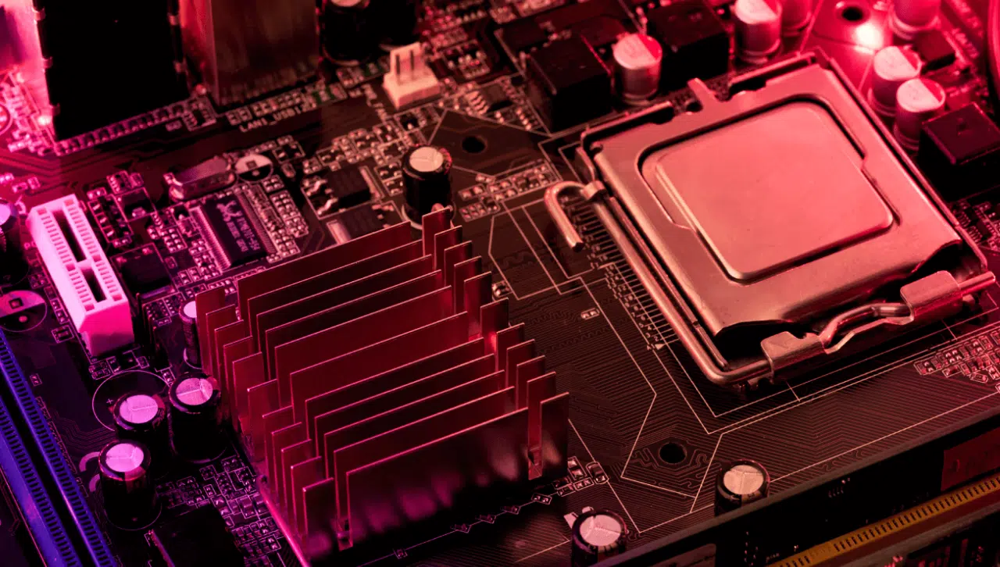
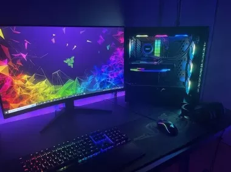
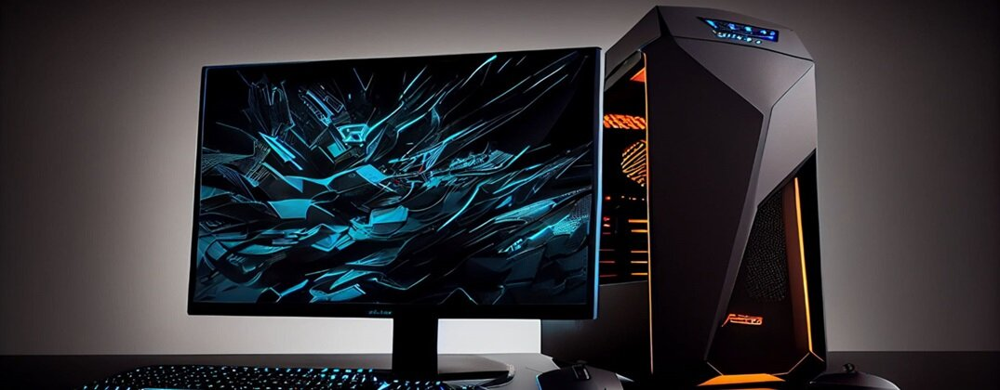
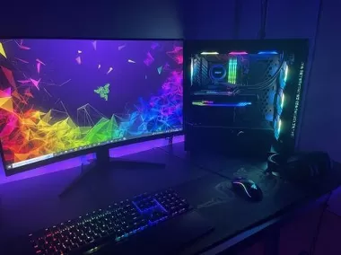
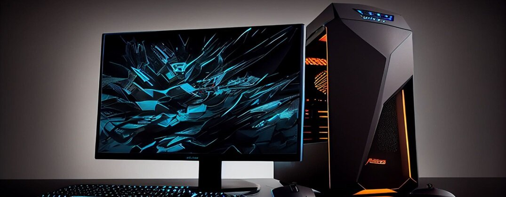

Komputer moją pasją - Podzespoły komputerowe |
|
Podzespoły komputeroweKomputer składa się z wielu różnych podzespołów, które współpracują ze sobą, aby umożliwić działanie systemu. Główne elementy to procesor, pamięć RAM, karta graficzna, płyta główna oraz zasilacz. Jednym z najważniejszych podzespołów jest procesor - serce komputera, który wykonuje wszystkie operacje matematyczne i logiczne. Inne ważne elementy to pamięć RAM, która przechowuje dane w trakcie pracy, oraz karta graficzna, odpowiedzialna za wyświetlanie obrazu na monitorze. Pamięć masowa, taka jak dyski SSD lub HDD, służy do przechowywania wszystkich danych, w tym systemu operacyjnego, aplikacji i plików użytkownika. |
Galeria 



|
|
© 2024 Jan Kowalski. Wszelkie prawa zastrzeżone. |
|